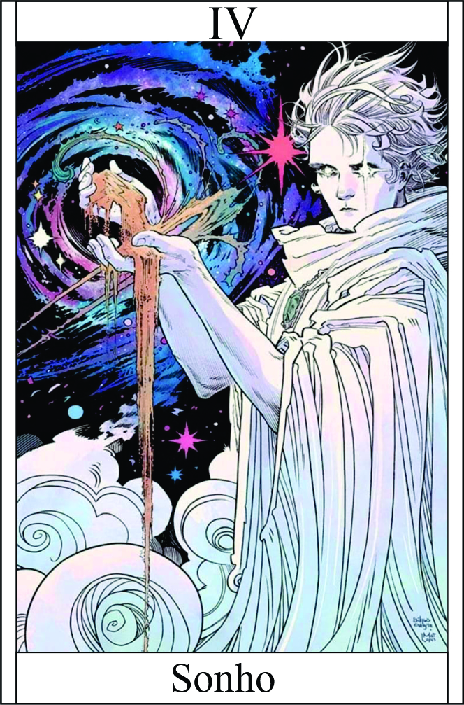

O Sonho
Têndencia: Neutro Mal
Passiva:
Laços Oníricos:
Você possui uma conexão especial com o reino dos sonhos, permitindo que você influencie e interaja com os sonhos das pessoas ao seu redor. Enquanto estiver próximo de alguém dormindo, você pode entrar nos seus sonhos, explorando e manipulando suas imaginações. Essa habilidade oferece diversas possibilidades estratégicas e de interação, como obter informações, influenciar emoções e até mesmo controlar os elementos dos sonhos para afetar a realidade. Também pode colocar uma parte do cerébro para dormir assim tendo sonhos acordados ou se comunicar com alguém. Teste: (Manipulção + Lábia) + 1
Legado 1 - Pesadelo Compartilhado
Ao adentrar os sonhos do oponente, o campeão é capaz de criar um pesadelo intenso e compartilhá-lo com o oponente, causando medo e perturbação. O oponente sofrerá dano psicológico ao ser confrontado com seus piores medos e angústias, resultando em penalidades temporárias em suas habilidades e ações.
Sempre que Pesadelo Compartilhado tiver em campo, precisa fazer teste de sanidade, se falha vai perder a vez e se zerar a sanidade suas skill são bloqueadas. | Dano por round: +1
Condição para ativar a habilidade:
É necessário que o campeão esteja próximo de um oponente e conectado com Laços Oníricos.
Legado 2 - Ilusão Onírica
Utilizando seu poder sobre os sonhos e a quebra da realidade, o campeão é capaz de criar ilusões oníricas para confundir e enganar seus oponentes. Essas ilusões podem assumir diferentes formas e englobar cenários surreais, fazendo com que os oponentes tenham dificuldade em distinguir o que é real e o que não é. Isso resulta em penalidades temporárias em suas habilidades de percepção e tomada de decisões.
Tornando sonhos ou pesadelos em realidade | Dano: (Manipulção) + 1
Condição para ativar a habilidade:
O campeão deve estar ciente de uma ilusão ou manipulação da realidade em seu entorno.
Legado 3 - Telepatia Onírica:
Através da telepatia onírica, o campeão pode entrar na mente do oponente e ler seus pensamentos e emoções. Isso permite que o campeão antecipe os movimentos do oponente e ganhe vantagem estratégica durante o combate. Além disso, o campeão pode influenciar as emoções do oponente, provocando medo, raiva ou confusão, afetando negativamente suas habilidades de ataque e defesa.
Poderá rolar o dado novamente para esquivar com redutor -2 | Seu inimigo ganha redutor -1 para acertos
Restrição de uso:
O campeão deve estabelecer um contato visual direto com o oponente.
Legado 3 - Telepatia Onírica:
Através da telepatia onírica, o campeão pode entrar na mente do oponente e ler seus pensamentos e emoções. Isso permite que o campeão antecipe os movimentos do oponente e ganhe vantagem estratégica durante o combate. Além disso, o campeão pode influenciar as emoções do oponente, provocando medo, raiva ou confusão, afetando negativamente suas habilidades de ataque e defesa.
Poderá rolar o dado novamente para esquivar com redutor -2 | Seu inimigo ganha redutor -1 para acertos
Restrição de uso:
O campeão deve estabelecer um contato visual direto com o oponente.
Legado 4 - Realidade Fragmentada:
O campeão desencadeia uma quebra da realidade ao seu redor, fragmentando a percepção dos oponentes e distorcendo a própria realidade. Isso resulta em confusão e desorientação, tornando os oponentes mais vulneráveis aos ataques do campeão. Além disso, o campeão ganha a capacidade de manipular a realidade fragmentada, criando distorções e obstáculos ilusórios para enganar e atrapalhar os oponentes.
O alvo precisará fazer teste de (perceção + consciência) para saber o que é real ou falso e todas as ações dele
Importante combinação: O campeão pode utilizar a habilidade de Pesadelo Compartilhado para introduzir um pesadelo intenso na mente do oponente e, em seguida, aproveitar a confusão e vulnerabilidade resultante para lançar habilidades como Ilusão Onírica e Telepatia Onírica. Essa combinação de habilidades permite ao campeão controlar a percepção e os movimentos do oponente, tornando-o uma presa fácil para ataques subsequentes.
Ao combinar suas habilidades de controle dos sonhos, quebra da realidade e telepatia, o campeão se torna uma força formidável, capaz de manipular a mente e a realidade dos oponentes. Através da exploração dos sonhos e da distorção da percepção, o campeão pode confundir, enfraquecer e subjugar seus adversários, ganhando a vantagem no combate.
Restrição de uso:
Conectados com Laços Oníricos.